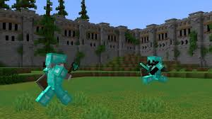
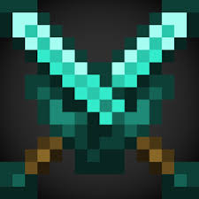
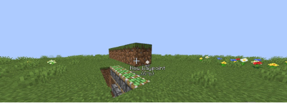

⚔️ Critical Hits
To deal a critical hit, jump and swing your sword while you are falling downward. A critical hit deals 150 % of your weapon's base damage and shows star particles. Chaining critical hits against opponents who can't easily retaliate is the foundation of good PvP.

⏱️ Attack Cooldown
Since Minecraft 1.9, each weapon has an attack cooldown indicator shown on your hotbar. Wait for the indicator to fill completely before swinging — swinging too early deals heavily reduced damage. A fully charged sword hit can deal up to 7 damage, while a spam click deals only 1–2 damage.

🛡️ Shield Management
Always carry a shield in your off-hand. Right-click to block incoming attacks — a properly timed shield block completely negates all melee damage. However, axes can disable your shield for 5 seconds, so watch out for axe users and be ready to dodge or back off when your shield is down.
🏃 Strafing & Terrain
Constantly move left and right (strafe) to make yourself harder to hit. Use the terrain to your advantage — higher ground gives you a reach advantage and makes it easier to land critical hits. Avoid fighting in tight spaces where you can't dodge, and never let yourself get cornered against a wall or cliff edge.

Sword: Sharpness V, Knockback II, Fire Aspect II, Unbreaking III, Mending
Armor: Protection IV, Unbreaking III, Mending on all pieces
Helmet bonus: Aqua Affinity + Respiration III for water fights
Off-hand: Always keep a Shield + Totem of Undying swap option ready